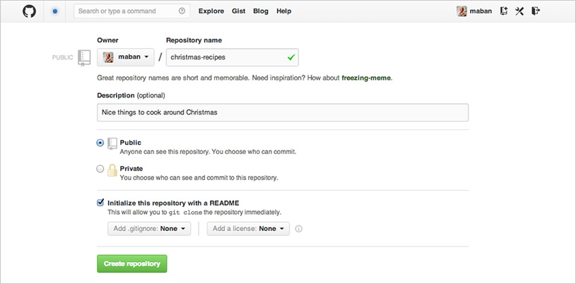
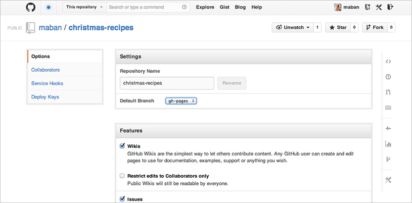
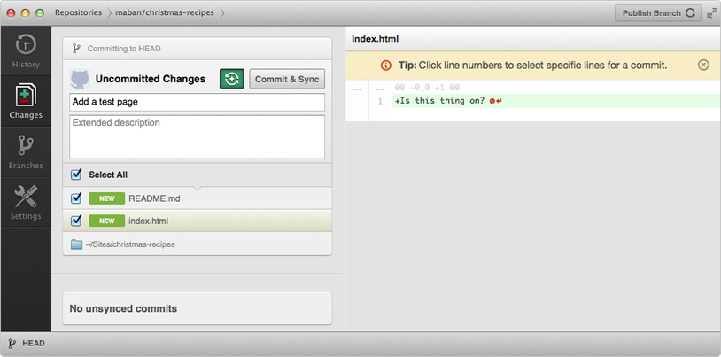

Get Started With GitHub Pages (Plus Bonus Jekyll)

After several failed attempts at getting set up with GitHub Pages, I vowed that if I ever figured out how to do it, I’d write it up. Fortunately, I did eventually figure it out, so here is my write-up.
Why I think GitHub Pages is cool
Normally when you host stuff on GitHub, you’re just storing your files there. If you push site files, what you’re storing is the code, and when you view a file, you’re viewing the code rather than the output. What GitHub Pages lets you do is store those files, and if they’re HTML files, you can view them like any other website, so there’s no need to host them separately yourself.
GitHub Pages accepts static HTML but can’t execute languages like PHP, or use a database in the way you’re probably used to, so you’ll need to output static HTML files. This is where templating tools such as Jekyll come in, which I’ll talk about later.
The main benefit of GitHub Pages is ease of collaboration. Changes you make in the repository are automatically synced, so if your site’s hosted on GitHub, it’s as up-to-date as your GitHub repository. This really appeals to me because when I just want to quickly get something set up, I don’t want to mess around with hosting; and when people submit a pull request, I want that change to be visible as soon as I merge it without having to set up web hooks.
Before you get started
If you’ve used GitHub before, already have an account and know the basics like how to set up a repository and clone it to your computer, you’re good to go. If not, I recommend getting familiar with that first. The GitHub site has extensive documentation on getting started, and if you’re not a fan of using the command line, the official GitHub apps for Mac and Windows are great.
I also found this tutorial about GitHub Pages by Thinkful really useful, and it contains details on how to turn an existing repository into a GitHub Pages site.
Although this involves a bit of using the command line, it’s minimal, and I’ll guide you through the basics.
Setting up GitHub Pages
For this demo we’re going to build a Christmas recipe site — nothing complex, just a place to store recipes so we can share them with people, and they can fork or suggest changes to ones they like. My GitHub username is maban, and the project I’ve set up is called christmas-recipes, so once I’ve set up GitHub Pages, the site can be found here: http://maban.github.io/christmas-recipes/
You can set up a custom domain, but by default, the URL for your GitHub Pages site is your-username.github.io/your-project-name.
Set up the repository
The first thing we’re going to do is create a new GitHub repository, in exactly the same way as normal, and clone it to the computer. Let’s give it the name christmas-recipes. There’s nothing in it at the moment, but that’s OK.

After setting up the repository on the GitHub website, I cloned it to my computer in my Sites folder using the GitHub app (you can clone it somewhere else, if you want), and now I have a local repository synced with the remote one on GitHub.
Navigate to the repository
Now let’s open up the command line and navigate to the local repository. The easiest way to do this in Terminal is by typing cd and dragging and dropping the folder into the terminal window and pressing Return. You can refer to Chris Coyier’s GIF illustrating this very same thing, from last week’s 24 ways article “Grunt for People Who Think Things Like Grunt are Weird and Hard” (which is excellent).
{kind=link}
So, for me, that’s…
cd /Users/Anna/Sites/christmas-recipes
Create a special GitHub Pages branch
So far we haven’t done anything different from setting up a regular repository, but here’s where things change.
Now we’re in the right place, let’s create a gh-pages branch. This tells GitHub that this is a special branch, and to treat the contents of it differently.
Make sure you’re still in the christmas-recipes directory, and type this command to create the gh-pages branch:
git checkout --orphan gh-pages
That --orphan option might be new to you. An orphaned branch is an empty branch that’s disconnected from the branch it was created off, and it starts with no commits, making it a special standalone branch. checkout switches us from the branch we were on to that branch.
If all’s gone well, we’ll get a message saying Switched to a new branch ‘gh-pages’.
You may get an error message saying you don’t have admin privileges, in which case you’ll need to type sudo at the start of that command.
Make gh-pages your default branch (optional)
The gh-pages branch is separate to the master branch, but by default, the master branch is what will show up if we go to our repository’s URL on GitHub. To change this, go to the repository settings and select gh-pages as the default branch.

If, like me, you only want the one branch, you can delete the master branch by following Oli Studholme’s tutorial. It’s actually really easy to do, and means you only have to worry about keeping one branch up to date.
If you prefer to work from master but push updates to the gh-pages branch, Lea Verou has written up a quick tutorial on how to do this, and it basically involves working from the master branch, and using git rebase to bring one branch up to date with another.
At the moment, we’ve only got that branch on the local machine, and it’s empty, so to be able to see something at our special GitHub Pages URL, we’ll need to create a page and push it to the remote repository.
Make a page
Open up your favourite text editor, create a file called index.html in your christmas-recipes folder, and put some exciting text in it. Don’t worry about the markup: all we need is text because right now we’re just checking it works.

Now, let’s commit and push our changes. You can do that in the command line if you’re comfortable with that, or you can do it via the GitHub app. Don’t forget to add a useful commit message.

Now we’re ready to see our gorgeous new site! Go to your-username.github.io/your-project-name and, hopefully, you’ll see your first GitHub Pages site. If not, don’t panic, it can take up to ten minutes to publish, so you could make a quick cake in a cup while you wait.
After a short wait, our page should be live! Hopefully that wasn’t too traumatic. Now we know it works, we can add some proper markup and CSS and even some more pages.
If you’re feeling brave, how about we take it to the next level…
Setting up Jekyll
Since GitHub Pages can’t execute languages like PHP, we need to give it static HTML files. This is fine if there are only a few pages, but soon we’ll start to miss things like PHP includes for content that’s the same on every page, like headers and footers.
Jekyll helps set up templates and turn them into static HTML. It separates markup from content, and makes it a lot easier for people to edit pages collaboratively. With our recipe site, we want to make it really easy for people to fix typos or add notes, without having to understand PHP. Also, there’s the added benefit that static HTML pages load really fast.
Jekyll isn’t officially supported on Windows, but it is still possible to run it if you’re prepared to get your hands dirty.
Install Jekyll
Back in Terminal, we’re going to install Jekyll…
gem install jekyll
…and wait for the script to run. This might take a few moments. It might take so long that you get worried its broken, but resist the urge to start mashing your keyboard like I did.
Get Jekyll to run on the repository
Fingers crossed nothing has gone wrong so far. If something did go wrong, don’t give up! Check this helpful post by Andy Taylor – you probably just need to install something else first.
Now we’re going to tell Jekyll to set up a new project in the repository, which is in my Sites folder (yours may be in a different place). Remember, we can drag the directory into the terminal window after the command.
jekyll new /Users/Anna/Sites/christmas-recipes
If everything went as expected, we should get this error message: Conflict: /Users/Anna/Sites/christmas-recipes exists and is not empty.
But that’s OK. It’s just upset because we’ve got that index.html file and possibly also a README.md in there that we made earlier. So move those onto your desktop for the moment and run the command again.
jekyll new /Users/Anna/Sites/christmas-recipes
It should say that the site has installed.
Check you’re in the repository, and if you’re not, navigate to it by typing cd , drag the christmas-recipes directory into terminal…
jekyll cd /Users/Anna/Sites/christmas-recipes
…and type this command to tell Jekyll to run:
jekyll serve --watch
By adding --watch at the end, we’re forcing Jekyll to rebuild the site every time we hit Save, so we don’t have to keep telling it to update every time we want to view the changes. We’ll need to run this every time we start work on the project, otherwise changes won’t be applied. For now, wait while it does its thing.
Update the config file
When it’s finished, we’ll see the text press ctrl-c to stop. Don’t do that, though. Instead, open up the directory. You’ll notice some new files and folders in there. There’s one called _site, and that’s where all the site files are saved when they’re turned into static HTML. Don’t touch the files in here — they’re the generated files and will get overwritten every time we make changes to pages and layouts.
There’s a file in our directory called _config.yml. This has some settings we can change, one of them being what our base URL is. GitHub Pages will assume the base URL is above the project repository, so changing the settings here will help further down the line when setting up navigation links.
Replace the contents of the _config.yml file with this:
name: Christmas Recipes
markdown: redcarpet
pygments: true
baseurl: /christmas-recipes
Set up your files
Overwrite the index.html file in the root with the one we made earlier (you might want to pop the README.md back in there, too).
Delete the files in the css folder — we’ll add our own later.
View the Jekyll site
Open up your favourite browser and type http://localhost:4000/christmas-recipes in the address bar.

Check it out, that’s your site! But it could do with a bit more love.
Set up the _includes files
It’s always useful to be able to pull in snippets of content onto pages, such as the header and footer, so they only need to be updated in one place. That’s what an _includes folder is for in Jekyll. Create a folder in the root called _includes, and within it add two files: head.html and foot.html.
In head.html, paste the following:
<!DOCTYPE html>
<html>
<head>
<meta charset="utf-8">
<title>{{ page.title }}</title>
<link rel="stylesheet" href="{{ site.baseurl }}/css/main.css" >
</head>
<body>
and in foot.html:
</body>
</html>
Whenever we want to pull in something from the _includes folder, we can use {% include filename.html %} in the layout file — I’ll show you how to set that up in next step.
Making layouts
In our directory, there’s a folder called _layouts and this lets us create a reusable template for pages. Inside that is a default.html file.
Delete everything in default.html and paste in this instead:
{% include head.html %}<h1>{{ page.title }}</h1>{{ content }}{% include foot.html %}
That’s a very basic page with a header, footer, page title and some content. To apply this template to a page, go back into the index.html page and add this snippet to the very top of the file:
---
layout: default
title: Home
---
Now save the index.html file and hit Refresh in the browser. We should see a heading where {{ page.title }} was in the layout, which matches what comes after title: on the page itself (in this case, Home). So, if we wanted a subheading to appear on every page, we could add {{ page.subheading }} to where we want it to appear in our layout file, and a line that says subheading: This is a subheading in between the dashes at the top of the page itself.
Using Markdown for templates
Anything on a page that sits under the closing dashes is output where {{ content }} appears in the template file. At the moment, this is being output as HTML, but we can use Markdown instead, and Jekyll will convert that into HTML. For this recipe site, we want to make it as easy as possible for people to be able to collaborate, and also have the markup separate from the content, so let’s use Markdown instead of HTML for the recipes.
Telling a page to use Markdown instead of HTML is incredibly simple. All we need to do is change the filename from .html to .md, so let’s rename the index.html to index.md. Now we can use Markdown, and Jekyll will output that as HTML.
Create a new layout
We’re going to create a new layout called recipe which is going to be the template for any recipe page we create. Let’s keep it super simple.
In the _layouts folder, create a file called recipe.html and paste in this:
{% include head.html %}<main><h1>{{ page.title }}</h1>{{ content }}<p>Recipe by <a href="{{ page.recipe-attribution-link }}">{{ page.recipe-attribution }}</a>.</p></main>{% include nav.html %}{% include foot.html %}
That’s our template. The content that goes on the recipe layout includes a page title, the recipe content, a recipe attribution and a recipe attribution link.
Adding some recipe pages
Create a new file in the root of the christmas-recipes folder and call it gingerbread.md. Paste the following into it:
--- layout: recipe title: Gingerbread recipe-attribution: HungryJenny recipe-attribution-link: http://www.opensourcefood.com/people/HungryJenny/recipes/soft-christmas-gingerbread-cookies --- Makes about 15 small cookies.## Ingredients* 175g plain flour * 90g brown sugar * 50g unsalted butter, diced, at room temperature * 2 tbsp golden syrup * 1 egg, beaten * 1 tsp ground ginger * 1 tsp cinnamon * 1 tsp bicarbonate of soda * Icing sugar to dust## Method1. Sift the flour, ginger, cinnamon and bicarbonate of soda into a large mixing bowl. 2. Use your fingers to rub in the diced butter. Mix in the sugar. 3. Mix the egg with the syrup then pour into the flour mixture. Fold in well to form a dough. 4. Tip some flour onto the work surface and knead the dough until smooth. 5. Preheat the oven to 180°C. 6. Roll the dough out flat and use a shaped cutter to make as many cookies as you like. 7. Transfer the cookies to a tray and bake in the oven for 15 minutes. Lightly dust the cookies with icing sugar.
The content is in Markdown, and when we hit Save, it’ll be converted into HTML in the _site folder. Save the file, and go to http://localhost:4000/christmas-recipes/gingerbread.html in your favourite browser.

Add some navigation
In your _includes folder, create a new file called nav.html. Here is some code that will generate your navigation:
<nav class="nav-primary" role="navigation" >
<ul>
{% for p in site.pages %}
<li>
<a {% if p.url == page.url %}class="active"{% endif %} href="{{ site.baseurl }}{{ p.url }}">{{ p.title }}</a>
</li>
{% endfor %}
</ul>
</nav>
This is going to look for all pages and generate a list of them, and give the navigation item that is currently active a class of active so we can style it differently.
Now we need to include that navigation snippet in our layout. Paste {% include nav.html %} in default.html file, under {{ content }}.
Push the changes to GitHub Pages
Now we’ve got a couple of pages, it’s time to push our changes to GitHub. We can do this in exactly the same way as before. Check your special GitHub URL (your-username.github.io/your-project-name) and you should see your site up and running.
If you quit Terminal, don’t forget to run jekyll serve --watch from within the directory the next time you want to work on the files.
Next steps
Now we know the basics of creating Jekyll templates and publishing them as GitHub Pages, we can have some fun adding more pages and styling them up.
I’ve only been using Jekyll for a matter of weeks, mainly for prototyping. It’s really good as a content management system for blogs, and a lot of people host their Jekyll blogs on GitHub, such as Harry Roberts
By hosting the code so openly it will make me take more pride in it and allow me to work on it much more easily; no excuses now!
Overall, the documentation for Jekyll feels a little sparse and geared more towards blogs than other sites, but as more people discover the benefits of it, I’m sure this will improve over time.
If you’re interested in poking about with some code, all the files from this tutorial are available on GitHub.
About the author
Anna Debenham is a freelance front-end developer living in Brighton in the UK.
She’s the author of Front-end Style Guides, and when she’s not playing on them, she’s testing as many game console browsers as she can get her hands on.